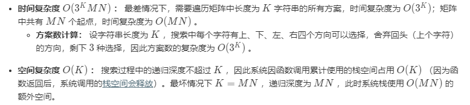

前言
最近随便投了字节跳动的暑期实习生，没想到简历过关了，4.12日先去笔试。考虑到Leetcode上面的题目比较多，决定先把《剑指Offer》上的所有题目都刷一遍。
1. 数组中重复的数字
思路：使用哈希表或者集合等数据结构，遍历数组中的数字，当数字没有出现在集合中时，将其加入集合，当数字已经出现在集合中时，说明其重复了，直接返回。
时间复杂度：$O(n)$，n为数组大小。
空间复杂度: $O(n)$
代码：
class Solution:
def findRepeatNumber(self, nums: List[int]) -> int:
dic={}
for i in nums:
if i not in dic.keys():
dic[i]=1
else:
return i2. 二维数组中的查找
思路：有些类似于二叉查找树的思路，从右上角开始搜索，左侧的数字都比当前数小，下方的数字都比当前数大。如果当前数小于目标，则向下移动一格，大于目标，则向左移动一格，等于目标返回True，超出边界时需要返回False。
时间复杂度：$O(m+n)$，这是从右上角搜索到左下角的最坏情况，m为行数，n为列数。
空间复杂度: $O(1)$
代码：
class Solution:
def findNumberIn2DArray(self, matrix: List[List[int]], target: int) -> bool:
if matrix!=[]:
row=0
col=len(matrix[0])-1
while (0<=row<=len(matrix)-1 and 0<=col<=len(matrix[0])-1):
if matrix[row][col]>target:
col-=1
elif matrix[row][col]<target:
row+=1
else:
return True
return False3.替换空格
思路：将字符串转换为字符列表进行遍历替换即可。（也可以直接调用字符串的replace函数）
注意：Python中常见的不可变类型有数字、字符串和元组，可变类型有列表和字典。区别主要是： 当不可变数据类型的对应变量的值发生了改变，那么它对应的内存地址也会发生改变。 而可变数据类型可以在不改变内存地址的前提下修改对应内存的值。所以，如果我们要原地修改字符串的内容，需要将其转换为列表。
时间复杂度：$O(n)$，n为原字符串长度。
空间复杂度: $O(m)$，m为替换空格后字符串长度。
代码：
class Solution:
def replaceSpace(self, s: str) -> str:
stLi=list(s)
for i in range(len(stLi)):
if stLi[i]==' ':
stLi[i]='%20'
return "".join(stLi)4.从尾到头打印链表
思路1：递归法，递归结束条件为当前指针为None，利用递归的机制进行求解。（非尾递归，会先将当前层递归函数保存在栈空间中，等待下层递归函数执行完返回）
时间复杂度：$O(n)$，n为链表长度。
空间复杂度: $O(n)$。
代码：
# Definition for singly-linked list.
# class ListNode:
# def __init__(self, x):
# self.val = x
# self.next = None
class Solution:
def reversePrint(self, head: ListNode) -> List[int]:
return self.reversePrint(head.next)+[head.val] if head!=None else []注：执行语句 A if 条件语句 else 执行语句B，如果条件满足则执行A，否则执行B。
思路2：辅助栈，利用栈的性质（先进后出）求解。
时间复杂度：$O(n)$，n为链表长度。
空间复杂度: $O(n)$。
代码：
# Definition for singly-linked list.
# class ListNode:
# def __init__(self, x):
# self.val = x
# self.next = None
class Solution:
def reversePrint(self, head: ListNode) -> List[int]:
p=head
result=[]
while (p!=None):
result.append(p.val)
p=p.next
return result[::-1]5. 重建二叉树
思路：我们生成二叉树主要有两种做法，一是利用标记了空节点的层次遍历序列，二是利用前序（后序）遍历加上中序遍历。后者的具体做法是分治法：
- 前序遍历的第 1 个结点一定是二叉树的根结点；
- 在中序遍历中，根结点把中序遍历序列分成了两个部分，左边部分构成了二叉树的根结点的左子树，右边部分构成了二叉树的根结点的右子树。
- 查找根结点在中序遍历序列中的位置，可以遍历，也可以在一开始就记录下来。

通过分治，我们可以递归求解。
代码：
# Definition for a binary tree node.
# class TreeNode:
# def __init__(self, x):
# self.val = x
# self.left = None
# self.right = None
class Solution:
def buildTree(self, preorder: List[int], inorder: List[int]) -> TreeNode:
def build(preL,preR,inL,inR):
if preL>preR or inL>inR:#当前子树为空
return None
root=TreeNode(preorder[preL])
inPos=inorder.index(root.val)
leftLen=inPos-inL
root.left=build(preL+1,preL+leftLen,inL,inPos-1)#分治，划分左子树和右子树的序列
root.right=build(preL+leftLen+1,preR,inPos+1,inR)
return root
if preorder!=[]:
return build(0,len(preorder)-1,0,len(inorder)-1)
return None6. 用两个栈实现队列
思路： 我们可以设计栈A用于入队操作，栈B用于将元素倒序，从而实现出队操作。
加入队尾
appendTail()函数： 将数字val加入栈A即可。删除队首
deleteHead()函数：有以下三种情况。
- 当栈
B不为空：B中仍有已完成倒序的元素，因此直接返回B的栈顶元素。 - 否则，当
A为空： 即两个栈都为空，无元素，因此返回 -1 。 - 否则： 将栈
A元素全部转移至栈B中，实现元素倒序，并返回栈B的栈顶元素。
- 当栈
时间复杂度：入队$O(1)$，出队$O(n)$
空间复杂度：$O(n)$
这个思路只需要保证入队、出队操作的正确返回即可，不需要维护一个真正的用栈模拟的队列。还可以用栈A模拟队列，辅助栈B用于模拟队列的入队或者出队操作，不过那样会比较慢，因为每一次使用辅助栈B都会涉及倒序操作。
class CQueue:
def __init__(self):
self.A, self.B = [], []
def appendTail(self, value: int) -> None:
self.A.append(value)
def deleteHead(self) -> int:
if self.B:
return self.B.pop()
if not self.A:
return -1
while self.A:
self.B.append(self.A.pop())
return self.B.pop()7.斐波那契数列
思路：经典题，动态规划求解，相较于递归节约时间和空间。
时间复杂度：$O(n)$
空间复杂度：$O(n)$
class Solution:
def fib(self, n: int) -> int:
fib=[0,1]
for i in range(2,n+1):
fib.append((fib[i-1]+fib[i-2])%1000000007)#实际上python只需要在return时取余即可，这里是向java等语言看齐，防止越界
return fib[n]事实上，这道题的DP状态矩阵还可以进一步优化，仅使用两个变量存储，降为$O(1)$。
class Solution:
def fib(self, n: int) -> int:
a, b = 0, 1
for _ in range(n):
a, b = b, a + b
return a % 10000000078.青蛙跳台阶问题
思路：依然是动态规划问题，青蛙跳到第1级台阶只有一个路径，第2级台阶只有两个路径，第n级台阶的路径为跳到第n-2级台阶的路径数加上跳到第n-1级台阶的路径数之和。
时间复杂度：$O(n)$
空间复杂度：$O(1)$
class Solution:
def numWays(self, n: int) -> int:
a,b=1,2
if n<2:
return a
for _ in range(n-2):
a,b=b,a+b
return b%10000000079.旋转数组的最小数字
思路：这种类型的题目，如果我们直接使用线性级别的时间复杂度肯定能做，但没啥意思。查找、排序的题目如果想达到对数级别的时间复杂度，一定要尝试二分法（减治思想）。
- 本题的思路是通过二分法减治排除必不可能是最小值的元素。
- 首先，与常规二分法一样，我们设置两个指针left和right指向数组的左右边界。mid=（left+right）//2
- 我们比较numbers[mid]与numbers[right]的值，分为以下三种情况:
- numbers[mid]<numbers[right]：根据旋转数组的性质，说明从numbers[mid]到numbers[right]必然是升序序列，所以mid+1到right的数字必然大于mid位置的数字，所以它们都不可能是最小值，可以排除，进入[left，mid]闭区间查找最小值。
- numbers[mid]>numbers[right]：根据旋转数组的性质，说明旋转点必然在numbers[mid+1]到numbers[right]之间，进入[mid+1，right]闭区间查找最小值。
- numbers[mid]==numbers[right]：此时，我们不知道最小值在[left，mid]闭区间还是[mid+1，right]闭区间中， 例 [1, 0, 1, 1, 1]中，最小值在[left，mid]，例[1, 1, 1, 0, 1]中，最小值在[mid+1，right]中。虽然我们无法进行二分减治，但是此时我们确定了两个相等的数，并且我们知道删除其中一个不影响最终寻找最小值，我们可以将right减1，缩小区间，再次尝试二分。
- 迭代二分后，最终left将超过right，此时left的位置即为最小值的位置。
- 为什么不比较numbers[mid]与numbers[left]的值？
- 例子[1,2,3,4,5]中，numbers[mid]>numbers[left]，最小值在[left，mid]中，但在例子[3,4,5,1,2]中，numbers[mid]>numbers[left]，最小值却在[mid+1，right]中，考虑到未旋转的特殊情况，我们不能使用中间数与首个数比较。
时间复杂度：$O(logn)$
空间复杂度：$O(1)$
class Solution:
def minArray(self, numbers: List[int]) -> int:
left=0
right=len(numbers)-1
while(left<right):#二分查找这里是小于等于，因为二分查找需要比较最后一个长度为1的区间的值与目标是否相等，这里仅需找到最后一个长度为1的区间即可
mid=(left+right)//2
if numbers[mid]>numbers[right]:
left=mid+1
elif numbers[mid]<numbers[right]:
right=mid
else:
right-=1
return numbers[left]10.矩阵中的路径
思路：这类走迷宫问题，我们首先很容易想到的就是DFS+回溯算法。类似的题目还有解数独、全排列、皇后问题等。基本的思路就是尝试从矩阵中的每个位置出发，如果当前位置的字符等于目标字符串的首字符，那么继续向左、右、上、下四个方向尝试匹配，目前字符串的指针加1。如果目标字符串的指针到达其长度，说明已经完成匹配，可以返回True。特别地，在这里，同一位置的字符不能重复选择，我们需要设置一个visited矩阵。

class Solution:
def exist(self, board: List[List[str]], word: str) -> bool:
visited=[[False for _ in board[0]] for _ in board]
def backtrack(row,col,index):
if index==len(word):
return True
if (0<=row<=len(board)-1 and 0<=col<=len(board[0])-1):
if board[row][col]==word[index] and visited[row][col]==False:
visited[row][col]=True
res=backtrack(row+1,col,index+1) or backtrack(row-1,col,index+1) or backtrack(row,col+1,index+1) or backtrack(row,col-1,index+1)#这里不能直接return，否则无法回溯
visited[row][col]=False#回溯已访问矩阵
return res
for row in range(len(board)):
for col in range(len(board[0])):
if backtrack(row,col,0):##尝试每个位置出发
return True
return FalsePS：这里的visited矩阵可以不用开，直接原地修改board矩阵的元素为False即可。
class Solution:
def exist(self, board: List[List[str]], word: str) -> bool:
def backtrack(row,col,index):
if index==len(word):
return True
if (0<=row<=len(board)-1 and 0<=col<=len(board[0])-1):
if board[row][col]==word[index]:
tmp,board[row][col]=board[row][col],False
res=backtrack(row+1,col,index+1) or backtrack(row-1,col,index+1) or backtrack(row,col+1,index+1) or backtrack(row,col-1,index+1)
board[row][col]=tmp
return res
for row in range(len(board)):
for col in range(len(board[0])):
if backtrack(row,col,0):
return True
return False